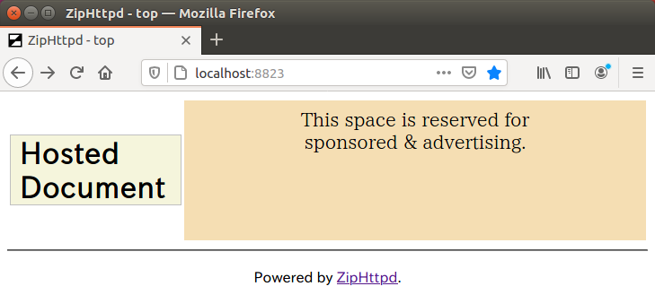

ZipHttpd を unix 系システムにインストールする手順 ZipHttpd を unix 系システムにインストールする手順
ZipHttpd を unix 系システムにインストールする手順 ZipHttpd を unix 系システムにインストールする手順
ver とりあえず版 - 2021/01/20 ZipHttpd.com
ZipHttpd のバイナリ提供は当面は Windows のみの予定です。
そのため、Linux などではソースコードからのビルドでご利用いただくことになります。
複数のプロジェクトで構成されているため、ビルドして配置するのは面倒です。
そのため簡単にビルドできるようにしてあります。
バイナリ提供である Windows 比べてバグ対応をいち早く利用できます。
しかし、同時に不安定版でもあります。
問題がある場合、直近以外のコミットでビルドすると治る可能性があります。
将来的には Git Flow 方式を採用し、タグを付ける予定です。
Git と Go (ver1.11以上) を必要とします。
Git は標準としてインストールされているもので結構です。
Go は version 1.11 以降であるならば問題ありません。
~/.ziphttpd $ go version
go version go1.15.6 linux/amd64
インストールされていない場合は公式のインストール手順に従ってください。
ZipHttpd は任意のディレクトリにインストールできます。
ディレクトリを用意したら、インストールスクリプト(bash)をダウンロードします。
このディレクトリ以下に動作環境を構築しますので、専用のディレクトリを作ってください。
このディレクトリ以下のみを参照しますので、USB などのリムーバブルな場所に構築すれば他のマシンでも稼働できます。
mkdir .ziphttpd
cd .ziphttpd/
wget https://ziphttpd.com/static/zh_download.sh
ls
~ $ mkdir .ziphttpd
~ $ cd .ziphttpd/
~/.ziphttpd $ wget https://ziphttpd.com/static/zh_download.sh
--2021-01-20 00:19:53-- https://ziphttpd.com/static/zh_download.sh
ziphttpd.com (ziphttpd.com) をDNSに問いあわせています... 216.239.36.21, 216.239.38.21, 216.239.34.21, ...
ziphttpd.com (ziphttpd.com)|216.239.36.21|:443 に接続しています... 接続しました。
HTTP による接続要求を送信しました、応答を待っています... 200 OK
長さ: 特定できません [text/x-sh]
`zh_download.sh' に保存中
zh_download.sh [ <=> ] 823 --.-KB/s 時間 0s
2021-01-20 00:19:53 (27.1 MB/s) - `zh_download.sh' へ保存終了 [823]
~/.ziphttpd $ ls
zh_download.sh
~/.ziphttpd $
インストールはダウンロードしたスクリプトで実施します。
bash ./zh_download.sh
ls
~/.ziphttpd $ bash ./zh_download.sh
ZH_HOME: /home/hoge/.ziphttpd
ZH_SRC: /home/hoge/.ziphttpd/src
PROJECT BUILD START: ziphttpd.unix
Cloning into 'ziphttpd.unix'...
remote: Enumerating objects: 33, done.
remote: Counting objects: 100% (33/33), done.
remote: Compressing objects: 100% (24/24), done.
remote: Total 33 (delta 14), reused 26 (delta 7), pack-reused 0
Unpacking objects: 100% (33/33), done.
Checking connectivity... done.
Already up-to-date.
Already up-to-date.
PROJECT BUILD END: ziphttpd.unix
PROJECT BUILD START: ziphttpd
Cloning into 'ziphttpd'...
remote: Enumerating objects: 87, done.
remote: Counting objects: 100% (87/87), done.
remote: Compressing objects: 100% (68/68), done.
remote: Total 87 (delta 20), reused 82 (delta 15), pack-reused 0
Unpacking objects: 100% (87/87), done.
Checking connectivity... done.
Already up-to-date.
Already up-to-date.
PROJECT BUILD END: ziphttpd
PROJECT BUILD START: zhsig
Cloning into 'zhsig'...
remote: Enumerating objects: 115, done.
remote: Counting objects: 100% (115/115), done.
remote: Compressing objects: 100% (70/70), done.
remote: Total 115 (delta 44), reused 103 (delta 32), pack-reused 0
Receiving objects: 100% (115/115), 29.23 KiB | 0 bytes/s, done.
Resolving deltas: 100% (44/44), done.
Checking connectivity... done.
Already up-to-date.
Already up-to-date.
PROJECT BUILD END: zhsig
PROJECT BUILD START: selector
Cloning into 'selector'...
remote: Enumerating objects: 63, done.
remote: Counting objects: 100% (63/63), done.
remote: Compressing objects: 100% (40/40), done.
remote: Total 63 (delta 26), reused 56 (delta 19), pack-reused 0
Unpacking objects: 100% (63/63), done.
Checking connectivity... done.
Already up-to-date.
Already up-to-date.
PROJECT BUILD END: selector
~/.ziphttpd $
インストール後は以下のようになります。
~/.ziphttpd $ ls
controller.sh selector.sh zh_download.sh zhsign ziphttpd.sh
selector src zhget ziphttpd
~/.ziphttpd $
ZipHttpd を常駐起動させます。
./ziphttpd.sh start
~/.ziphttpd $ ./ziphttpd.sh start
~/.ziphttpd $
起動後は以下のようになります。
~/.ziphttpd $ ls
controller.sh selector store ziphttpd
docs selector.sh zh_download.sh ziphttpd.json
log src zhget ziphttpd.pid
portlockins.json static zhsign ziphttpd.sh
~/.ziphttpd $
ZipHttpd は http://localhost:8823 にアクセスして参照できます。

インストール直後ではドキュメントが何もダウンロードされていません。
まずは次節を参照して説明書のダウンロード設定をしてください。
ダウンロード設定の例として、説明書を用います。
その操作のため、まずは selector を起動してください。
./selector.sh start
~/.ziphttpd $ ./selector.sh start
~/.ziphttpd $
selector はリポジトリから ZipHttpd のドキュメントを公開しているサイトにアクセスするツールです。
ブラウザで http://localhost:8822 にアクセスします。
リポジトリ登録されているサイトの一覧がアコーディングメニューで表示されています。

この中から ziphttpd.com を探して開きます。
開いた中に「download "ZipHttpd バージョン1"」のボタンがありますので押してください。

selector での操作は終了しましたので停止します。
ZipHttpd は再起動してください。
./selector.sh stop
./ziphttpd.sh restart
~/.ziphttpd $ ./selector.sh stop
~/.ziphttpd $ ./ziphttpd.sh restart
~/.ziphttpd $
ブラウザで見ると ZipHttpd ドキュメントが top 画面に追加されています。

selector の WebAPI でワンタッチ登録させる案もありましたが、第三者に勝手に登録される危険性があるため廃案となりました。
例) http://localhost:8822/api/one/{サイト}/{グループ} へのリンクをクリックすると登録
ドキュメントを top 画面のリンクから開きます。
selector は zhget のフロントエンドです。
ダウンロードするドキュメントが特定できているならば、
$ ./zhget -host ziphttpd.com -group ziphttpd-V1
という操作でもダウンロードの登録が可能です。
この操作ではリポジトリに登録していないサイトのドキュメントでもダウンロードできます。
Java のドキュメントは zip 圧縮されていますので、ZipHttpd で簡単に参照できます。
そのためには docs フォルダにダウンロードして、ZhpHttpd を再起動してください。
cd docs
wget https://repo1.maven.org/maven2/javax/servlet/javax.servlet-api/4.0.1/javax.servlet-api-4.0.1-javadoc.jar
cd ..
./ziphttpd.sh restart
~/.ziphttpd $ cd docs
~/.ziphttpd/docs $ wget https://repo1.maven.org/maven2/javax/servlet/javax.servlet-api/4.0.1/javax.servlet-api-4.0.1-javadoc.jar
--2021-01-20 00:42:36-- https://repo1.maven.org/maven2/javax/servlet/javax.servlet-api/4.0.1/javax.servlet-api-4.0.1-javadoc.jar
repo1.maven.org (repo1.maven.org) をDNSに問いあわせています... 151.101.52.209
repo1.maven.org (repo1.maven.org)|151.101.52.209|:443 に接続しています... 接続しました。
HTTP による接続要求を送信しました、応答を待っています... 200 OK
長さ: 671543 (656K) [application/java-archive]
`javax.servlet-api-4.0.1-javadoc.jar' に保存中
javax.servlet-api-4 100%[===================>] 655.80K 1.10MB/s 時間 0.6s
2021-01-20 00:42:37 (1.10 MB/s) - `javax.servlet-api-4.0.1-javadoc.jar' へ保存完了 [671543/671543]
~/.ziphttpd/docs $ cd ..
~/.ziphttpd $ ./ziphttpd.sh restart

top 画面のリンクから開きます。
ドキュメントの初期表示ファイルが分かりませんので、ディレクトリが表示されています。
index.html を開くようにするため、docs のドキュメント設定ファイルに "docroot": "index.html", の一行を追加します。
cat docs/javax.servlet-api-4.0.1-javadoc.json
vi docs/javax.servlet-api-4.0.1-javadoc.json
cat docs/javax.servlet-api-4.0.1-javadoc.json
./ziphttpd.sh restart
~/.ziphttpd $ cat docs/javax.servlet-api-4.0.1-javadoc.json
{
"name": "javax.servlet-api-4.0.1-javadoc",
"path": "docs/javax.servlet-api-4.0.1-javadoc.jar"
}~/.ziphttpd $ vi docs/javax.servlet-api-4.0.1-javadoc.json
~/.ziphttpd $ cat docs/javax.servlet-api-4.0.1-javadoc.json
{
"docroot": "index.html",
"name": "javax.servlet-api-4.0.1-javadoc",
"path": "docs/javax.servlet-api-4.0.1-javadoc.jar"
}
~/.ziphttpd $ ./ziphttpd.sh restart
~/.ziphttpd $
ドキュメントの初期表示ファイルとして index.html が開かれるようになります。
また、ドキュメントによっては文字コードが utf-8 でないため文字化けする場合があります。
その場合にはファイルの文字コードを確認し、"contentencoding": "Shift_JIS", と追加してください。
selector は ziphttpd.com をリポジトリとして、ドキュメントの提供サイトを取得しています。
リポジトリへの登録はドキュメントにはまだ記述していませんが、サインインなしの無料で登録可能です。
公開鍵(public.pem)＆公開鍵署名(public.pem.zhsig)とカタログ(catalog.json)を zhsign で作成します。
カタログに説明などを書き込み、自社(例:yourdomain.com)サイトの https://yourdomain.com/sig/ 以下に公開します。
https://ziphttpd.com/api/v1/regist/yourdomain.com にアクセスします。（ブラウザからでも構いません）
これを契機として ziphttpd.com は公開鍵を署名で検証したのちに、一覧にそのドメインを追加します。
インストールした後に ZipHttpd が更新された場合にはどうしたら良いでしょうか？
また、ダウンロードしているドキュメントが著作者によって更新されている場合も面倒です。
そんな時のための説明です。
インストールと同じく zh_download.sh を実行します。
プログラムが常駐している場合に問題があるかもしれませんので、停止させてから実行してください。
./ziphttpd.sh stop
./selector.sh stop
bash ./zh_download.sh
./ziphttpd.sh start
~/.ziphttpd $ ./ziphttpd.sh stop
~/.ziphttpd $ ./selector.sh stop
~/.ziphttpd $ bash ./zh_download.sh
ZH_HOME: /home/hoge/.ziphttpd
ZH_SRC: /home/hoge/.ziphttpd/src
PROJECT BUILD START: ziphttpd.unix
Already up-to-date.
Already up-to-date.
PROJECT BUILD END: ziphttpd.unix
PROJECT BUILD START: ziphttpd
Already up-to-date.
Already up-to-date.
PROJECT BUILD END: ziphttpd
PROJECT BUILD START: zhsig
Already up-to-date.
Already up-to-date.
PROJECT BUILD END: zhsig
PROJECT BUILD START: selector
Already up-to-date.
Already up-to-date.
PROJECT BUILD END: selector
~/.ziphttpd $ ./ziphttpd.sh start
~/.ziphttpd $
更新されたドキュメントを自動的にダウンロードすることができます。
そのためには zhget を引数無しで実行します。
ZipHttpd を再起動すればドキュメントは更新されたものになります。
./ziphttpd.sh stop
./zhget
./ziphttpd.sh start
~/.ziphttpd $ ./ziphttpd.sh stop
~/.ziphttpd $ ./zhget
~/.ziphttpd $ ./ziphttpd.sh start
~/.ziphttpd $
Copyright (C) 2020- ZipHttpd.com [mail]